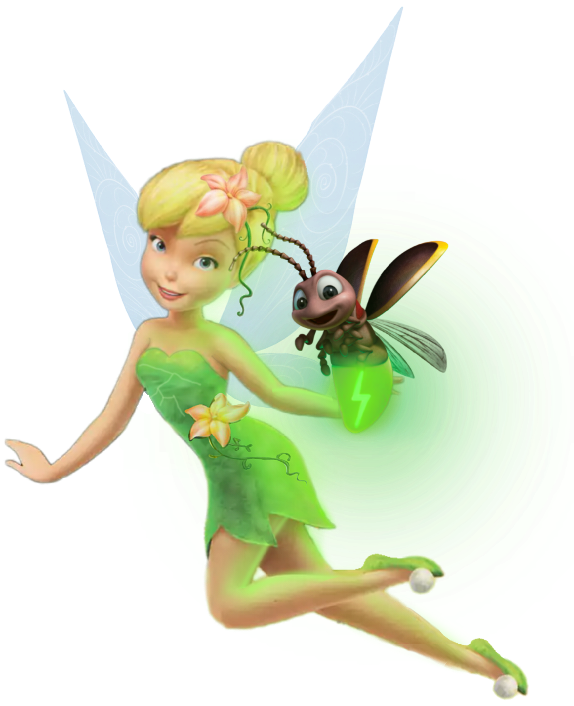

Quem é?
Tinker Bell nasceu da primeira risada de um bebê e foi levada pelo vento até o Refúgio das Fadas na Terra do Nunca. No universo clássico de Peter Pan, ela atua como a fiel companheira e guardiã do menino que não queria crescer, ajudando-o em suas aventuras contra o Capitão Gancho. Já em sua própria franquia de filmes, ela é apresentada como uma talentosa fada artesã responsável por criar e consertar objetos mágicos para ajudar as outras fadas a trazerem as estações do ano para o continente.
Aparência
Tinker Bell é uma fada diminuta e delicada, com cerca de treze centímetros de altura, de pele clara e feições expressivas. Ela possui cabelos loiros brilhantes presos em um coque alto com uma franja curta, além de grandes olhos azuis e orelhas levemente pontudas. Seu visual clássico consiste em um vestido curto verde-limão sem alças com a barra recortada em pontas, sapatilhas verdes decoradas com pompons brancos e um par de asas translúcidas nas costas que brilham e deixam um rastro de pó mágico dourado por onde ela voa.
Personalidade
A personalidade de Tinker Bell é marcada por um temperamento forte, impaciente e bastante teimoso, o que faz com que seu rosto fique literalmente vermelho quando ela sente raiva. Como as fadas são criaturas muito pequenas, suas emoções são extremas e imediatas, levando-a a sentir um ciúme intenso de qualquer pessoa que se aproxime de Peter Pan, como ocorre com Wendy Darling. Apesar de seu jeito explosivo e orgulhoso, ela é extremamente corajosa, criativa e leal aos seus amigos, sendo capaz de arriscar a própria vida para proteger aqueles que ama.